Un liant vivant
Les filaments du mycélium colonisent le substrat et s'entrelacent autour des brins de paille ou des copeaux. Ils les collent sans colle de synthèse.
Eco-Com imagine une brique isolante cultivée à partir de mycélium et de paille ou de copeaux de bois : un matériau biosourcé pour construire autrement.
Découvrir la fabricationLe mycélium est la partie végétative des champignons : un réseau de fins filaments qui se développe dans la matière organique. Cultivé sur de la paille ou des copeaux de bois, il relie les fibres entre elles et forme un bloc léger et rigide.
Notre brique est ainsi composée de deux ingrédients : un substrat végétal (déchets agricoles ou de scierie) et un mycélium qui joue le rôle de liant naturel. Elle est destinée à l'isolation des bâtiments : cloisons, panneaux, doublages.
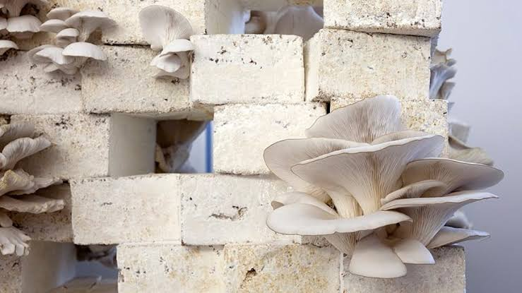
Le principe repose sur la croissance d'un organisme vivant, arrêtée avant l'utilisation.
Les filaments du mycélium colonisent le substrat et s'entrelacent autour des brins de paille ou des copeaux. Ils les collent sans colle de synthèse.
La matière obtenue est fibreuse et contient de l'air. Ce type de structure est reconnu pour limiter les transferts de chaleur et de son.
Une fois la forme obtenue, la brique est séchée pour stopper le développement du champignon. Le matériau n'est plus vivant quand il est posé.
Un procédé simple dans son principe. Les durées et températures exactes dépendent de la souche utilisée et seraient à définir par des essais.
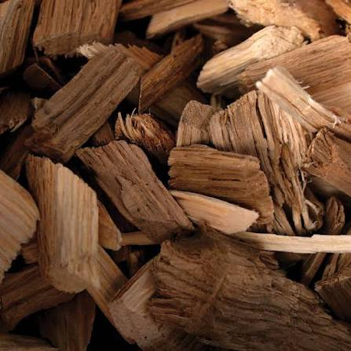
Paille, copeaux de bois ou autres résidus végétaux locaux sont récupérés puis broyés.
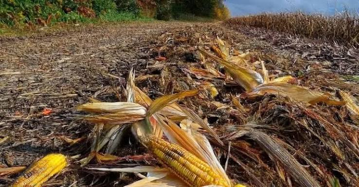
Le substrat est humidifié et traité pour éviter que d'autres micro-organismes ne concurrencent le mycélium.
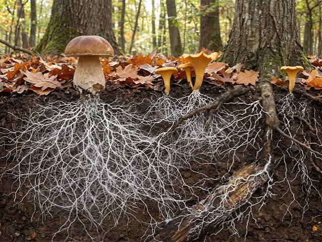
Le mycélium est mélangé au substrat, puis le mélange est tassé dans des moules.
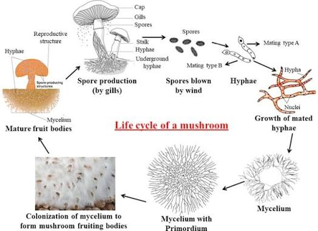
À l'abri de la lumière et dans des conditions maîtrisées, le mycélium colonise le mélange et soude les fibres.
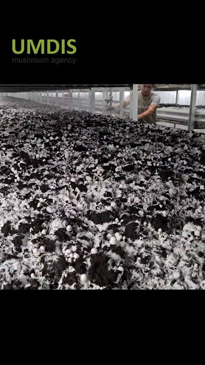
Un séchage stoppe la croissance et stabilise la brique, qui devient inerte.
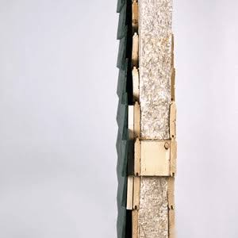
Les briques sont contrôlées puis mises en œuvre comme isolant dans un bâtiment.
Deux types d'étiquettes : « Généralement constaté » (observé pour ce type de matériau) et « À valider » (potentiel qu'il faudrait confirmer par des mesures sur notre brique). Nous n'annonçons aucune valeur chiffrée.
Les matériaux fibreux et légers isolent bien en général. Le niveau exact dépend de la formulation et devra être mesuré.
La structure poreuse peut absorber les sons. Des tests en laboratoire seraient nécessaires.
Une matière végétale liée par du mycélium est bien plus légère que la plupart des matériaux minéraux. Elle est facile à manipuler.
La paille et les copeaux sont des coproduits agricoles et forestiers : on leur donne une seconde vie.
Matériau d'origine naturelle, il pourrait être réutilisé ou composté. Cela dépend des éventuels traitements ajoutés.
La croissance se fait sans cuisson à haute température, contrairement à des matériaux comme la brique cuite. Le bilan complet reste à établir.
Présenter un matériau, c'est aussi dire ce qu'il ne sait pas encore faire.
Un matériau organique doit être protégé de l'eau pour garder ses qualités.
La brique sert à isoler, pas à porter la structure d'un bâtiment.
Comportement au feu, durabilité et homologation restent à étudier avant un usage réel.
Maîtriser la culture de façon régulière demande du temps, de l'espace et des compétences.
Eco-Com s'inscrit dans quatre des 17 objectifs fixés par les Nations unies dans l'Agenda 2030.
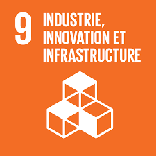
ODD 9 — Industrie, innovation et infrastructure.
Nous proposons un matériau de construction innovant, issu de la biofabrication.
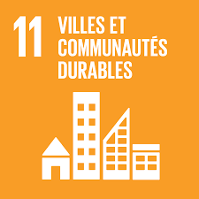
ODD 11 — Villes et communautés durables.
Des bâtiments mieux isolés et plus sobres en ressources.
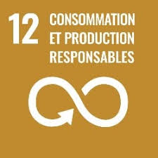
ODD 12 — Consommation et production responsables.
Les déchets végétaux deviennent une matière première.
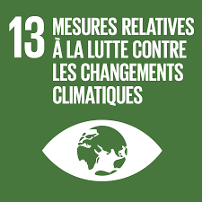
ODD 13 — Lutte contre les changements climatiques.
Moins de matériaux issus de ressources fossiles, un matériau biosourcé.
Eco-Com est mené par des élèves, avec le soutien de notre établissement. Notre objectif est de sensibiliser notre communauté à des matériaux plus responsables.